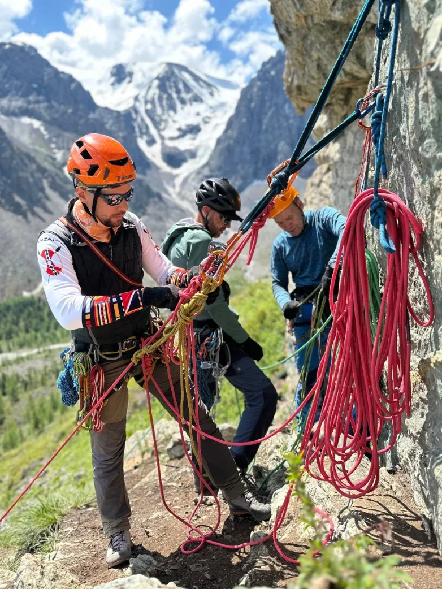

Квалификационный экзамен проводится Федерацией альпинизма России в соответствии с постановлением Правительства Российской Федерации от 1 июня 2021 г. № 1003. Аттестация проводится по двум подвидам маршрутов — экзамены по ним принимаются раздельно.

Инструкторам-проводникам, состоящим в реестре, необходимо открыть личные кабинеты и получить актуальные выписку и бейдж. Для получения приглашения через Госуслуги сообщите о готовности секретарю аттестационной комиссии.
Инструкция по работе в ПГС ↗ ·
Получение бейджа ↗
Сведения об аттестованных инструкторах-проводниках размещаются в едином федеральном реестре. Сопровождение групп на маршрутах, требующих специального сопровождения, допускается только для инструкторов-проводников, внесённых в реестр.
Открыть реестр ↗Сроки
Теоретический этап проводится в заочно-дистанционном формате в согласованные даты. Практический этап проводится очно в центрах по регионам аттестации; даты согласуются при регистрации заявления.
| Дата | Этап | Подвид маршрутов | Формат |
|---|---|---|---|
| 12 августа 2026 | Теоретический этап | Альпинизм и горный туризм | Заочно |
| 26 августа 2026 | Теоретический этап | Альпинизм и горный туризм | Заочно |
| 9 сентября 2026 | Теоретический этап | Альпинизм и горный туризм | Заочно |
| 23 сентября 2026 | Теоретический этап | Альпинизм и горный туризм | Заочно |
| По согласованию | Практический этап | Альпинизм и горный туризм · ски-альпинизм и фрирайд | Очно |
Допуск
К аттестации допускаются лица, подтвердившие горный опыт, отсутствие медицинских противопоказаний и отсутствие неснятой или непогашенной судимости.
Процедура
Соискатель определяет подвиды маршрутов (виды рельефа) и категории сложности, на которые претендует, после чего проходит этапы квалификационного экзамена.
Формируется комплект документов, определяются подвиды маршрутов и категории сложности, выбирается предпочтительное место проведения экзамена, заполняется и подписывается заявление.
Заполняется электронная форма с приложением скан-копий документов и заявления. После подтверждения соответствия документов направляется проект договора, подписанная копия возвращается по электронной почте.
После внесения первой части оплаты соискатель в согласованную дату отвечает на 25 вопросов в течение 60 минут. Зачётный результат — не менее 20 правильных ответов.
После внесения оставшейся части оплаты соискатель прибывает в согласованные даты в центр аттестации с комплектом документов, снаряжением и экипировкой по выбранным видам рельефа.
При положительном результате присваивается квалификация инструктора-проводника на заявленных видах рельефа и категориях сложности с внесением сведений в государственный реестр.
Соискатель получает реквизиты доступа к информационной системе реестра, авторизуется через ЕСИА и получает именную идентификационную карточку (бейдж).
География
Практический этап проводится в центрах аттестации Федерации альпинизма России. Возможность аренды снаряжения уточняется в выбранном центре заблаговременно.


Регион Дальний Восток. Сроки сессий — по графику набора.
Севастопольский сектор Южного берега Крыма.
Подготовка к экзамену
Билеты публикуются для ознакомления и позволяют заранее оценить объём требований. Перечни снаряжения обязательны к исполнению на практическом этапе.
Стоимость
Размер платы зависит от видов рельефа и категорий сложности, на которые претендует соискатель. Стоимость не включает расходы на проезд, проживание и питание.
| Виды рельефа | Категория I | Категория II | Категории III–IV | Категории V–VI |
|---|---|---|---|---|
| Снежный и ледовый | 45 000 ₽ | 45 000 ₽ | 55 000 ₽ | 70 000 ₽ |
| Скальный | 45 000 ₽ | 45 000 ₽ | 55 000 ₽ | 70 000 ₽ |
| Комбинированный | 50 000 ₽ | 60 000 ₽ | 70 000 ₽ | 85 000 ₽ |
| Ски-альпинизм и фрирайд | 45 000 ₽ | 45 000 ₽ | — | — |
Квалификация по подвиду маршрутов «выше 5700 м» присваивается при наличии подтверждённого высотного опыта и положительного результата аттестации.
Туроператорам
Инструкторы, внесённые в государственный реестр по спискам туроператоров, должны пройти аттестацию до 1 октября 2026 года.
Определить работающих инструкторов, подлежащих аттестации, и заявляемые виды рельефа и категории сложности.
Обеспечить сбор подтверждений опыта, медицинских заключений, справок и документов о подготовке по первой помощи.
Совместно с комиссией определить даты теоретического этапа и центр проведения практического этапа.
Подготовка
Аттестация является квалификационным экзаменом и не заменяет освоение образовательной программы. При отсутствии документа о профессиональном обучении или необходимого стажа соискатель проходит программу профессиональной переподготовки ФАР: дистанционный модуль и очный практикум на уполномоченных базах.
Программы обучения
Правовая база
Документы, регламентирующие аттестацию и деятельность инструкторов-проводников.
Контакты
Для регистрации на аттестационную сессию заполните электронную форму с указанием подвида маршрутов, видов рельефа и категорий сложности и приложите скан-копии документов. В ответе сообщаются перечень недостающих документов, центр проведения и сроки экзамена.